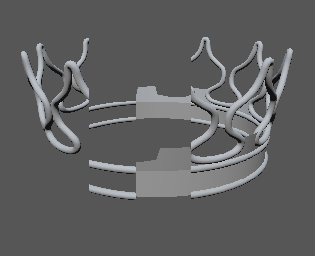
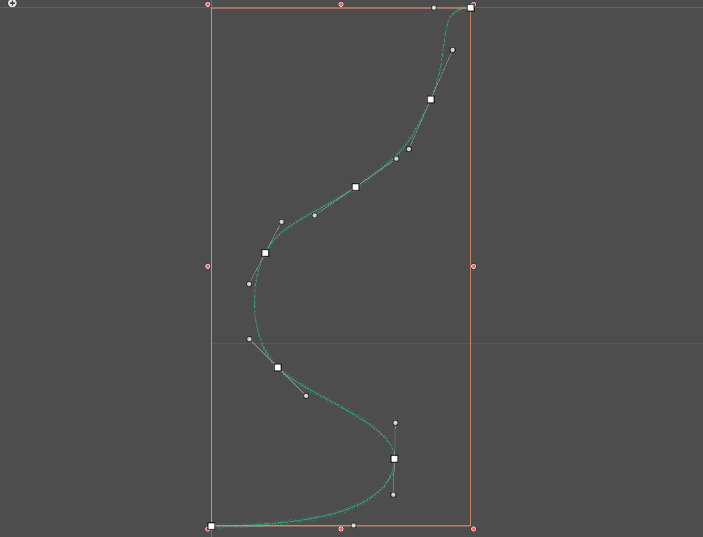
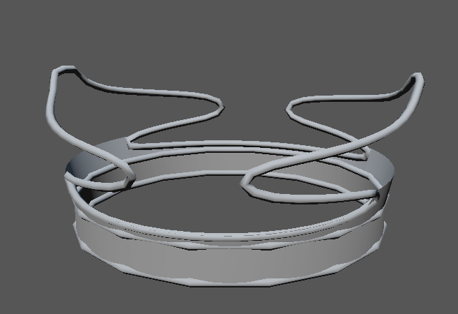
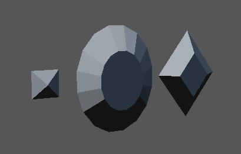
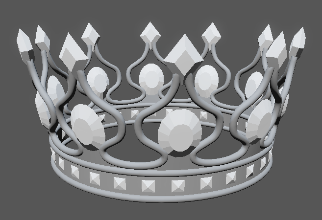
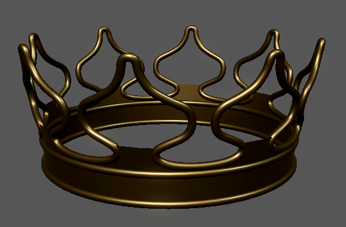
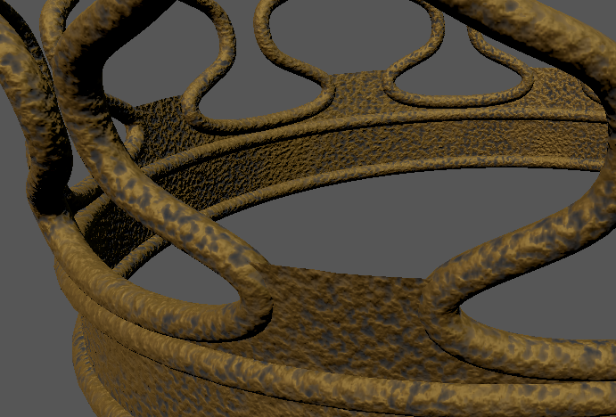
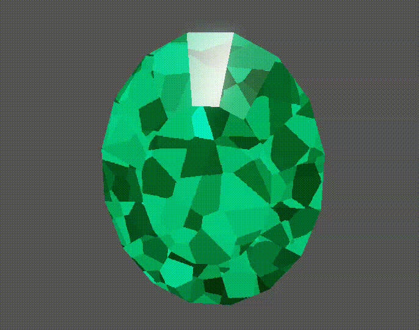
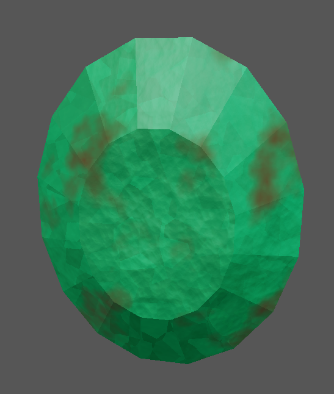
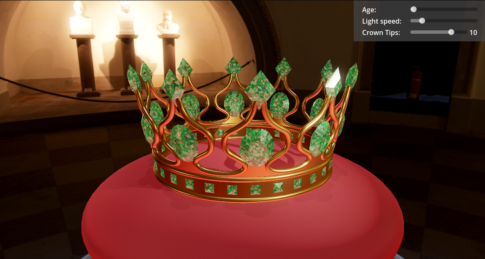

The crown mesh consists of multiple parts (from left to right): A curved torus at the top, two torus shapes and a thin flat part. The top part of the mesh is bent slightly outward.
The bent torus follows a Bézier curve defined with the
Path2D Node in Godot:

The number of tips is configurable as well as the height and the subdivision detail of the mesh.
A crown with reduced subdivision detail and 2 tips:

An algorithm was implemented that can generate different kinds of
gems with different parameters. Three gem were created using this
algorithm. They have been scaled using the Node3Ds
transform.

The script mesh_generation.gd contains the code for the
mesh generation of both the gem and the individual crown parts.

The script crown.gd contains the functions
spawn_gems_top, spawn_gems_middle,
spawn_gems_bottom, which place the gems.

A gold material was created by setting according albedo, metallic and roughness values.

The corroded version of the gold material adds normal detail as well as oxidization.

The shader for the gem fakes details of a gem by doing a refraction along the surface normal. The shader then imitates an infinite plane that lies inside the diamond, which is parallel to the currently viewed surface. A cellular noise texture is mapped onto that plane and used to adjust the color and normal of each cell differently.
Additionally a second material is used using the
next_pass feature of Godot to render the specular
highlights of the actual mesh on top of the “inside” of the gem.
The material is configured to imitate an emerald.

The corroded version of the gem adds normal detail, changes the roughness and adds dirt.
The corroded versions can be blended to the initial version to simulate the aging process.
A scene was created to showcase the meshes and materials:
ReflectionProbe is placed in the center of the crown
to approximate reflections.